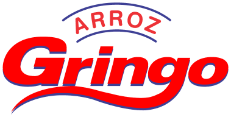
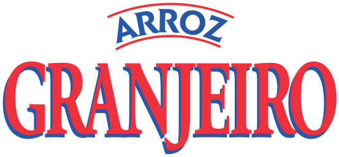

Uma identidade que junta os 70 anos de engenho em Dom Pedrito, a parboilização pelo método Gariboldi e o pampa gaúcho. É uma marca-mãe que dá força ao Gringo e ao Granjeiro sem mexer nas logos deles.
O símbolo é o C de Coradini desenhado por 13 grãos de arroz. Na abertura do C fica um grão dourado: o grão escolhido, que resume o cuidado de selecionar o melhor de cada colheita.
O desenho também lembra o sol nascendo na linha reta do horizonte do pampa, onde a Coradini beneficia o arroz desde 1955. A forma é simples para funcionar no ícone do Instagram, no saco de 5 kg e na lateral de um silo.
O verde e o dourado da marca atual continuam, para manter o reconhecimento. Entram dois tons novos: a palha, cor do arroz em casca, e a terra, que lembra o grão parboilizado e o solo do pampa.
Proporção sugerida: 60% Pampa ou Palha, 25% branco, 10% Dourado, 5% Terra. Texto claro sobre o Pampa tem contraste de 9,3:1, e o Carvão sobre a Palha tem 16:1.
Para títulos e assinatura. É uma serifa com ar de tradição sem parecer antiga. Google Fonts, uso comercial livre.
Para textos, botões e rótulos. É a fonte que a Coradini já usa, o que facilita a transição. Google Fonts, uso comercial livre.
As logos do Gringo e do Granjeiro não mudam. A Coradini entra só como endosso pequeno no verso da embalagem e no fim dos vídeos, como fazem as grandes empresas de alimentos.

um arroz Coradini
um arroz CoradiniProjetos de agro e arroz entre os mais apreciados do Behance. Estudamos só a estrutura, nenhuma imagem foi copiada. Toque para abrir o projeto original.